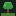

FocusForest
⚙ Settings
⌨
Focus
Short break
Long break
25:00
Session 1 · long break after 4
↺ Reset
Start
Skip ⏭
Next tree
Ambient sound
Off
🌧 Rain
🌬 Wind
🟤 Brown noise
🐦 Forest
Volume
Stats
Your forest
Finish a focus session to plant your first tree.
Species
History
Export JSON
Import JSON
Clear all
Settings
Focus (min)
Short break (min)
Long break (min)
Long break every
Auto-start next phase
Chime when a phase ends
Browser notification when a phase ends
Leave a withered stump if I abandon a focus session
Cancel
Save
Keyboard shortcuts
Space
Start / pause
R
Reset
N
Skip to next phase
1 / 2 / 3
Focus / short / long
M
Mute / unmute ambient
T
Edit task label
S
Settings
?
This help
Close